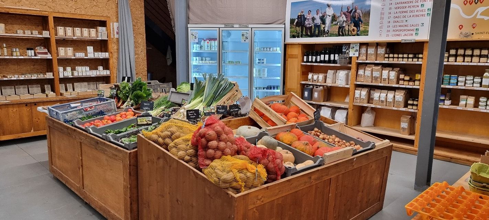
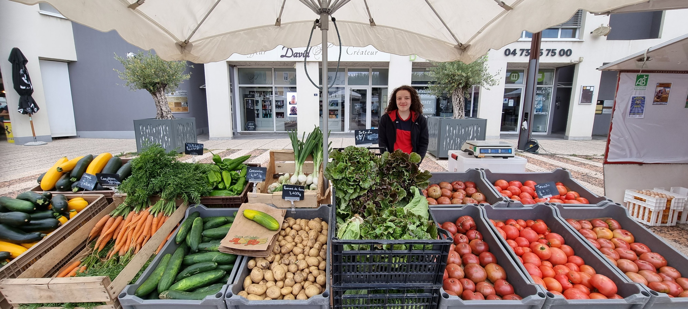

Animé-es par l’envie de développer un projet collectif, nous sommes un groupe de producteurs et productrices installé-es à proximité d’Issoire. Rassemblé-es autour de valeurs fortes telles que la transparence vis-à-vis des consommateurs et consommatrices, la maîtrise de nos circuits de vente, l’entraide, la création de liens entre producteurices et consommateurices… Ainsi est née l’idée de créer un magasin qui réunit nos produits et ceux de fermes environnantes afin de proposer aux habitant-es du territoire une large gamme de produits locaux.
Plus d'information
Le marché d'Issoire est le deuxième plus grand marché du Puy-de-Dôme. Tous les samedis matins les commerçants et producteurs locaux aiment se retrouver dans les rues du centre-ville. De la place de la République à la place de la Montagne en passant par la rue Berbiziale, c'est le moment pour venir échanger avec de nombreux producteurs et marchands et en profiter pour refaire le plein de produits de la région. On aime flâner et partir à la découverte de nouvelles saveurs. Les commerçants n'hésitent pas à faire goûter leurs produits et à livrer de précieux conseils
Plus d'information